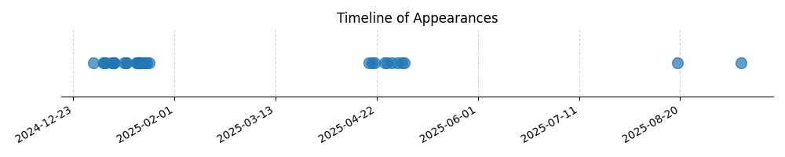

Kategorie: Meteorologie
Frontální bouřky jsou obvykle spojeny s frontálními systémy (studené, teplé, okluzní fronty), které se samy o sobě pohybují s vyšší rychlostí než lokální konvekční bouřky (bouřky z tepla) nebo bouřky indukované terénem (orografické bouřky). Pohyb fronty často „nutí“ bouřky, které se na ní tvoří, k rychlejšímu postupu.

| Datum výskytu |
|---|
| 2025-09-13 |
| 2025-08-19 |
| 2025-05-03 |
| 2025-05-02 |
| 2025-04-30 |
| 2025-04-28 |
| 2025-04-26 |
| 2025-04-25 |
| 2025-04-21 |
| 2025-04-20 |
| 2025-04-19 |
| 2025-01-22 |
| 2025-01-21 |
| 2025-01-20 |
| 2025-01-20 |
| 2025-01-19 |
| 2025-01-19 |
| 2025-01-18 |
| 2025-01-18 |
| 2025-01-18 |
| 2025-01-17 |
| 2025-01-17 |
| 2025-01-13 |
| 2025-01-13 |
| 2025-01-12 |
| 2025-01-08 |
| 2025-01-08 |
| 2025-01-08 |
| 2025-01-07 |
| 2025-01-05 |
| 2025-01-04 |
| 2025-01-04 |
| 2024-12-31 |